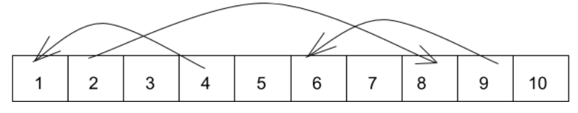

Markov Chains
 Chutes and Ladders Board
Chutes and Ladders Board
Markov Chain
What is a markov chain?
A succession of random events such as coin tosses, e.g. THTTHT.
- There is a set of states: Tails and Heads. Each of these events has a certain likelihood.
There is an initial probability for each state as well as a transition probability between states. For the next event, if starting from heads, there is an equally likely chance of getting another heads as well as getting tails. The vice versa is also true for tails.
In a fair coin:
| Outcome | Likelihood |
|---|---|
| Heads | 0.5 |
| Tails | 0.5 |
Application: Chutes and Ladders
Markov Propoerty
Markov property dictates that the future only depends on current state, thus it doesn’t matter how we got to current state. In other words, the probability of landing on a position is independent from all the moves before the current state.
Markov chains use a combination of probability and matrices for problems that occur in a series of steps or probability trees. In this way, we are able to calculate the probability of being in any state many steps ahead. Markov chains are a set of states and the probability of transitioning between states. In chutes and ladders, every player is in a state and no person can be in both states. Players change states when the dice is rolled.
Transition Matrix
These probabilities then form a matrix known as a transition matrix. The probability in the transition probability matrix is the probability of moving to a state, not the probability of starting in that state. All transition matrices are square which is due to the fact that each state always has a probability of transitioning to another state, even if the transition probability is zero.
Absorbing Markov Chain
There are different types of markov chains, however for the case of chutes and ladders, we will be focusing on one, the absorbing markov chain. An absorbing markov chain has absorbing states where once reached, it is impossible to exit from. In this case, we will be using an absorbing markov chain since the game is over once the final position is reached.
Setting Up the Board
In a typical board for chutes and ladders, there are 100 squares and thus 100 states that a player can be in, however this is tedius to construct, thus a simplified board is used to demonstrate this instead. In this case, the “ladder” is from position 2 and advances the player to position 8 while the “snakes” are from position 4 to position 1 and from position 9 to position 6. A standard, fair, six sided dice is used.
Players are however independent from each other, the moves of one player do not affect the probability of the other player on rolling a number and advancing. The only way the other person is involved is in who makes it to the 100th/last position first. Therefore, only one player’s moves need to be calculated and understood to understand this problem.

In this case, the state space is: {0,1,3,5,6,7,8,10}. This is because when landed on, for spaces 2,4,and 9, the position either moves up or down through the use of a ladder or snake. There are different types of states, position 0 in this case is an open state, once this state is exited, the player cannot go back. For position 10 in this case, it is an absorbing state as once it is reached the game is over. On the other hand, state 1,3,4,5,6,7,8 are transient states.
- Initial probability: All players start off the board (or at state “0”).
\[P(X=0)=1\]
- Constructing the transition matrix: Probability from left side column state to land on the top row state. (Why is it not 11 by 11? Keep in mind that only 7 states are possible). The transition probability matrix for the first roll is:
import numpy as np
transition= np.array( [ [ 0, 1/3, 1/6, 1/6, 1/6, 0 , 1/6, 0 ],
[ 0, 1/6, 1/6, 1/6, 1/6, 1/6, 1/6, 0 ],
[ 0, 1/6, 0 , 1/6, 1/3, 1/6, 1/6, 0 ],
[ 0, 0 , 0 , 0 , 1/3, 1/6, 1/6, 1/3],
[ 0, 0 , 0 , 0 , 1/6, 1/6, 1/6, 1/2],
[ 0, 0 , 0 , 0 , 1/6, 0 , 1/6, 2/3],
[ 0, 0 , 0 , 0 , 1/6, 0 , 0 , 5/6],
[ 0, 0 , 0 , 0 , 0 , 0 , 0 , 1 ]])
prettyPrint (transition)## 0 1 3 5 6 7 8 10
## 0 0.000 0.333 0.167 0.167 0.167 0.000 0.167 0.000
## 1 0.000 0.167 0.167 0.167 0.167 0.167 0.167 0.000
## 3 0.000 0.167 0.000 0.167 0.333 0.167 0.167 0.000
## 5 0.000 0.000 0.000 0.000 0.333 0.167 0.167 0.333
## 6 0.000 0.000 0.000 0.000 0.167 0.167 0.167 0.500
## 7 0.000 0.000 0.000 0.000 0.167 0.000 0.167 0.667
## 8 0.000 0.000 0.000 0.000 0.167 0.000 0.000 0.833
## 10 0.000 0.000 0.000 0.000 0.000 0.000 0.000 1.000Notice that the rows of the transition matrix add up to one. The expected value for the position of the player is calculated by the sum of, all the probability times their corresponding state number for the first horizontal row . Therefore, the expected value is 4.
possible_states_int=[0,1,3,5,6,7,8,10]
expected_one= np.dot(transition[0], possible_states_int)
print(expected_one)## 4.0- Matrix Multiplication After two rolls, the matrix is:
second= np.dot(transition, transition)
prettyPrint(second)## 0 1 3 5 6 7 8 10
## 0 0.000 0.083 0.056 0.083 0.222 0.139 0.139 0.278
## 1 0.000 0.056 0.028 0.056 0.222 0.111 0.139 0.389
## 3 0.000 0.028 0.028 0.028 0.194 0.111 0.139 0.472
## 5 0.000 0.000 0.000 0.000 0.111 0.056 0.083 0.750
## 6 0.000 0.000 0.000 0.000 0.083 0.028 0.056 0.833
## 7 0.000 0.000 0.000 0.000 0.056 0.028 0.028 0.889
## 8 0.000 0.000 0.000 0.000 0.028 0.028 0.028 0.917
## 10 0.000 0.000 0.000 0.000 0.000 0.000 0.000 1.000expected_two= np.dot(second[0], possible_states_int)
print(round(expected_two,2))## 6.86This is found by multiplying the transition probability matrix by itself using dot product. The expected value after two rows is found by multiplying the matrix by itself. The expected value after two turns is 6.86.
You can continue this matrix multiplication determine the probability of being at a certain state after n number of rolls.
- Expected Number of rolls to finish
For expected hitting times or expected number of dice rolls to reach state 10, it can be found through the first-hitting-time model or the first passage time which indicates the time taken to reach a certain value.
\[ E(Y) = \sum_{i}P(Y|X=i)P(X=i) \]
How do we do this faster? Matrix partition
\[ \begin{bmatrix} Q & R \\ 0 & I \end{bmatrix} \]
Take the transition matrix and divide it into 4 sections. Q, a square matrix, shows the transition probabilities between transition states. R is rectangular and represent the probability of a transition state turning into an absorbing state. 0 represents the reverse, the probability of an absorbing state turning reaching to a transition state (impossible based on the definition of absorbing state). I represents the identity matrix, once in this state, it can only stay in this state (absorbing state).
So how do we find the expected absorbing time? \[ H = QH + 1 \] The 1 represents the probability changing from absorbing to absorbing. Another way of writing this is: \[ H = (I - Q)^{-1}1 \]
#since we only have one absorbing state, our Q square matrix is just the transition matrix without the last row and last column
Q = transition[:-1,:-1]
R = np.array([1,1,1,1,1,1,1])
I = np.identity(7)
subtract = I-Q
inverse = np.linalg.inv(subtract)
np.dot(inverse,R)## array([3.37232432, 3.10613256, 2.91389635, 2.05389222, 1.76047904,
## 1.50898204, 1.29341317])Therefore, for the simplified chutes and ladders game, the expected number of moves from start to finish is 3.37 moves.
Simulation
Using python, we can run a simulation to see verify this answer. Without having to write the transition matrix, it also fairly easy to adapt this to find the average number of turns for the full board and beyond.
def play_game():
chute_ladders = {4:1,2:8,9:6}
win=False
num_turns=0
position=0
while win!=True:
num_turns+=1
#player spins
dice=np.random.randint(1, high=7, dtype=int)
#player moves
position+= dice
#check position
if position>=10:
win=True
else:
if position in chute_ladders:
position = chute_ladders.get(position)
return num_turns
def main():
#run the simulation a bunch of times
multipleGames = np.array([play_game() for i in range(10000)])
print("Average number of moves to finish for 1000 games: ", np.mean(multipleGames))
main()## Average number of moves to finish for 1000 games: 3.3732We can see above that using a simulation, we get a similar answer to our markov chain of about 3.4 turns.
Other Applications
Markov chains are applicable to a wide range of topics including finance, music, and computer science. One example from biochemistry is Michaelis-Menten kinetics which describes the binding of substrate and enzyme, resulting in product formation. For a more complex example, I talk about hidden markov models here. \[ E + S \leftrightarrow ES \rightarrow E + P \]
Works Cited
Althoen, S. C., L. King, and K. Schilling. “Structural Glycobiology: A Game of Snakes and Ladders.” How Long Is A Game of Snakes and Ladders 18.8 (2008): 569. Mathematical Association. Mathematical Association, Mar. 1993. Web. 26 Sept. 2016.
Barry, Nick. “Analysis of Chutes and Ladders.” Data Genetics. Data Genetics, 2013. Web. 26 Sept. 2016.
Besom, Evelyn, and Sarah Rittgers. “Monte Carlo Methods with Snakes and Ladders.” Monte Carlo Method. N.p., n.d. Web. 26 Sept. 2016.
Busa, Natalino. “Markov Chains for Ladders and Snakes.” Natalino Busa:. Blogger, 25 Jan. 2013. Web. 26 Sept. 2016.
Campbell, J. The Maths of Snakes and Ladders (n.d.): n. pag. The Maths of Snakes and Ladders. 12 Dec. 2013. Web. 26 Sept. 2016.
Coolen, ACC. “Markov Chains Associated With Lipschitz Kernels Examples.”Markov Chains Compact Lecture Notes and Exercises (n.d.): 63-80. King’s College London, Sept. 2009. Web. 26 Sept. 2016.
Hochman, Michael. “CHUTES AND LADDERS.” CHUTES AND LADDERS(n.d.): n. pag. Web. 26 Sept. 2016.
Khamsi, M. A. “Markov Chains.” Markov Chains. S.O.S. Mathematics CyberBoard, 2016. Web. 26 Sept. 2016.
ORMethodsTutorials. “Sharkey: First Passage Times and the Chutes and Ladders Markov Chain.” YouTube. YouTube, 05 Nov. 2014. Web. 26 Sept. 2016.
Sundar, Avinaash, and Danny Zheng. “Markov Chains - A Simple Snakes and Ladders Example.” YouTube. YouTube, 03 Aug. 2014. Web. 26 Sept. 2016.
Wise, Barry M. “Cootie, Candyland or Chutes and Ladders: Solving a Parent’s Dilemma with Monte Carlo Simulation.” Cootie, Candyland or Chutes and Ladders: Solving a Parent’s Dilemma with Monte Carlo Simulation. Cornell University, n.d. Web. 26 Sept. 2016.
Cara (Yijin) Zou
Undergraduate Student
My academic interests include virtual drug screening, machine learning, and dentistry.